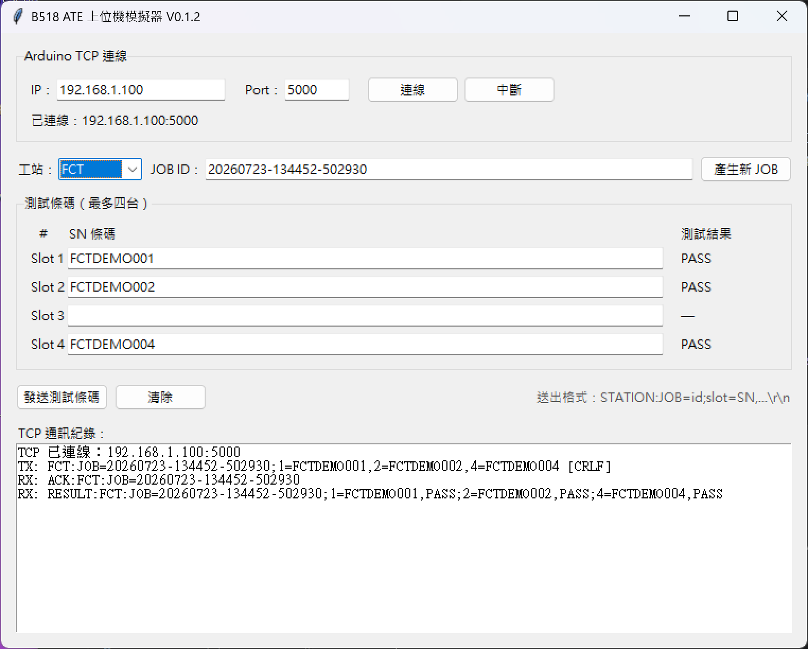
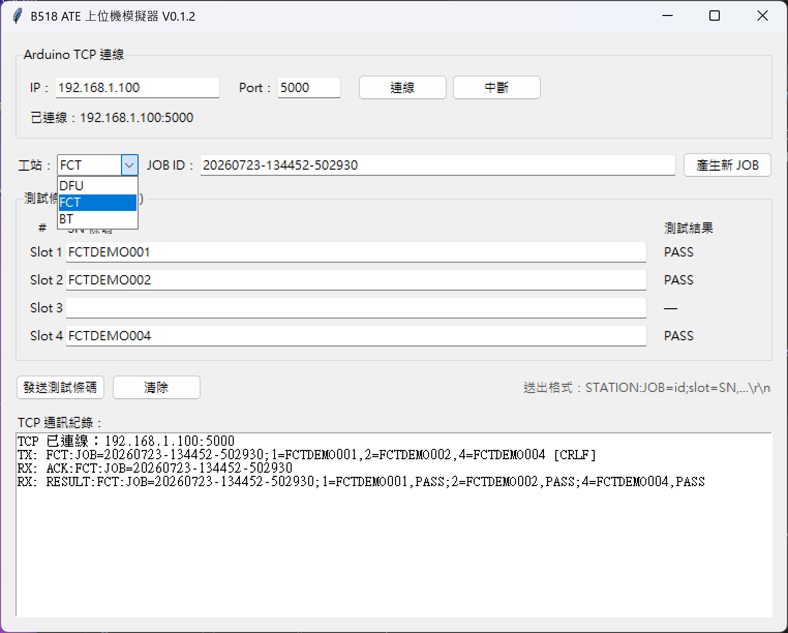

1. 程式檔案說明
upper_computer_simulator.py 或 Windows 打包後的 B518 Upper Computer Simulator.exe。test_upper_computer_simulator.py 是開發人員的自動化測試檔，不能拿來當上位機 HMI。
Python 原始程式
upper_computer_simulator.py開發或除錯使用，需要 Windows Python 環境。
Windows 交付程式
dist\B518 Upper Computer Simulator\
└── B518 Upper Computer Simulator.exeFAE 建議直接執行 EXE，不需要安裝 Python。
2. 啟動前準備
- Windows 電腦、Mac mini 與 Arduino W5100 位於同一網段。
- 已取得目標設備 Arduino 的唯一 IP，TCP port 預設為 5000。
- Mac mini Atlas Agent 已透過 USB CDC 連線 Arduino。
- Atlas Agent 所選工站與準備發送的 DFU／FCT／BT 一致。
- 沒有其他上位機正連線同一片 Arduino；MVP 同時只支援一個 TCP client。
3. 與 Arduino 建立 TCP 連線
上位機是 TCP client，Arduino W5100 是 TCP server。連線後保持同一條 TCP 連線等待 ACK 與 RESULT，不需要另外開一個接收程式。

| 畫面區域／按鍵 | 功能 | FAE 操作重點 |
|---|---|---|
| IP／Port | 指定要連線的 Arduino TCP server | IP 是 Arduino，不是 Mac mini；Port 預設 5000。 |
| 連線 | 建立 TCP socket 並啟動背景接收 | 狀態與 Log 都顯示已連線後才能發送。 |
| 中斷 | 主動關閉目前 TCP 連線 | 測試進行中不要按；應等待 RESULT 或 TIMEOUT。 |
| 工站 | 選擇 DFU、FCT 或 BT 命令格式 | 必須和目標 Mac mini Agent 的工站相同。 |
| JOB ID／產生新 JOB | 識別本次工作循環；按鍵依時間建立唯一值 | 每盤使用新 JOB，送出後到 RESULT 前不要更改。 |
| Slot 1～4 SN 條碼 | 把物料 SN 綁定到實際載具位置 | 空 slot 留白，不可把後方 SN 往前補位。 |
| 測試結果 | 顯示 WAIT ACK、TESTING、PASS、FAIL、TIMEOUT 或 UNKNOWN | 「—」表示該 slot 未送出或尚未指定。 |
| 發送測試條碼 | 組成 JOB 訊框並自動加上 CRLF | 至少填 1 個、最多 4 個不重複 SN。 |
| 清除 | 清空四個 SN 與結果欄 | 不會換 JOB、不會清除 Log，也不會中斷 TCP。 |
| TCP 通訊紀錄 | 依序顯示連線、TX、ACK、RESULT 與錯誤 | 異常時保存完整紀錄，不要只截最後一行。 |
輸入 IP
填入這一台測試設備 Arduino 的 IP，例如 192.168.1.104。不要填 Mac mini IP。
確認 Port
預設 5000。除非 Arduino 韌體已修改，否則不要更動。
按「連線」
狀態應顯示 已連線：IP:5000，下方 Log 顯示 TCP 已連線：IP:5000。兩處都正確才繼續。
測試期間保持連線
送出 JOB 後，接收執行緒會在同一 socket 等待回覆。收到整批 RESULT 前不要按「中斷」、關閉程式或拔除網路線。
IP、Port 與上次選擇的工站會儲存在：
%APPDATA%\B518UpperComputerSimulator\preferences.json4. 選擇設備與 JOB ID

FCT:JOB=...。DFU
韌體更新站。Agent 會依指定 slot 操作 HMI 輸入 SN，完成後監控 Atlas CSV。
FCT
功能測試站。儀器自行偵測有料 slot；Agent 不操作 HMI，所有 JOB 都直接依 SN 監控結果。
BT
藍牙測試站。Agent 點 Start All 或指定 Start N，並分析 STATUS 與設備 SN。
JOB ID 規則
- 每一個工作循環使用唯一 JOB ID，不要重複使用上一盤的 ID。
- 可按「產生新 JOB」，程式會以日期時間產生。
- 只可使用英數字、點、底線、連字號，最多 64 字元。
- 按發送後不要更改工站或 JOB ID，直到收到該 JOB 的 RESULT。
5. 輸入與發送條碼
依實際載具 slot 填寫
Slot 1～4 對應設備實際位置。沒有物料的 slot 留白，程式不會重新編號。
確認條碼格式
每批 1～4 個 SN；不可重複、不可含空白，只可使用英數字、點、底線或連字號。
按「發送測試條碼」
程式自動組成帶工站、JOB ID、slot 與 CRLF 結尾的完整訊框。
先等 ACK，再等 RESULT
送出後對應 slot 顯示 WAIT ACK；收到 ACK 後變成 TESTING。保持 TCP 連線，不要先按中斷。
本批結束後再清除
確認所有已送 slot 都有最終結果後，按「清除」移除 SN 與結果，再按「產生新 JOB」準備下一盤。TCP 連線可繼續沿用。
稀疏 slot 範例
只有 slot1、slot2、slot4 有物料時：
| Slot | 輸入 | 是否送出 |
|---|---|---|
| Slot 1 | SN001 | 是 |
| Slot 2 | SN002 | 是 |
| Slot 3 | 留白 | 否 |
| Slot 4 | SN004 | 是 |
DFU:JOB=20260723-001;1=SN001,2=SN002,4=SN004\r\n1=...、2=...、4=...，slot3 結果維持「—」。6. ACK 與 RESULT 判讀
ACK：已接單
ACK:BT:JOB=20260723-001\r\n收到 ACK 後，有輸入 SN 的 slot 顯示 TESTING。ACK 不代表測試已完成。
RESULT：整批完成
RESULT:BT:JOB=20260723-001;1=SN001,PASS;2=SN002,PASS;4=SN004,FAIL\r\n程式只會把「工站與 JOB ID 都等於目前畫面」的 RESULT 寫入結果欄；其他批次的 RESULT 會記錄為「忽略非當前 JOB」。每個結果仍會依 slot 寫回原位置，不會重新排序。
| 畫面狀態 | 意義 | FAE 行動 |
|---|---|---|
| WAIT ACK | JOB 已送出，尚未收到 Agent 接單 | 檢查 TCP Log；短時間內不應重送同一 JOB。 |
| TESTING | Agent 已 ACK，測試進行中 | 保持連線，等待整批 RESULT。 |
| PASS | 該 slot 測試通過 | 依產線流程放行。 |
| FAIL | 該 slot 任一測項失敗 | 依不良品流程處理並保留 Log。 |
| TIMEOUT | 設定時間內沒有結果 | 查設備、CSV 路徑與 SN，勿直接重複送相同 JOB。 |
| UNKNOWN | 收到的結果狀態無法歸類 | 保存完整 TCP 通訊紀錄，交由軟體人員分析。 |
7. 三種工站發送範例
DFU：slot1、2、4
DFU:JOB=DFU-20260723-001;1=DFU001,2=DFU002,4=DFU004\r\nFCT：slot1、4
FCT:JOB=FCT-20260723-001;1=FCT001,4=FCT004\r\nBT：slot1、2、4
BT:JOB=BT-20260723-001;1=BT001,2=BT002,4=BT004\r\n程式已自動加入 CRLF；操作員不需在輸入框手動輸入 \r\n。
8. 常見異常
| 現象 | 可能原因 | 處理方式 |
|---|---|---|
| 無法連線 IP:5000 | IP 錯、不同網段、Arduino 未上電、W5100 未接或已有 client | 確認 ping／網段、Agent 顯示 IP、網路線；中斷其他上位機。 |
| 顯示「尚未連線 Arduino TCP server」 | 未按連線或連線已斷 | 先完成 TCP 連線，再發送 JOB。 |
| WAIT ACK 一直不變 | Mac Agent 未連 USB、工站不一致或 TCP/USB bridge 中斷 | 看 TCP Log 與 Agent Log；確認 Agent 工站和 JOB 工站相同。 |
| 收到 WRONG_STATION | 上位機與 Agent 工站不同 | 修正其中一方的 DFU/FCT/BT 選擇後，用新 JOB ID 重送。 |
| 收到 BUSY | 前一 JOB 尚未完成 | 等待前一 JOB 的 RESULT/TIMEOUT；不要中斷或覆蓋。 |
| 收到 BT_SN_MISMATCH | BT 設備 SN 與上位機不符且人工取消覆核 | 核對載具 slot、設備 SN 與上位機資料，再建立新 JOB。 |
| RESULT 被忽略 | RESULT 的工站或 JOB ID 不是目前畫面值 | 檢查是否在測試中更改 JOB ID／工站，並保存原始 Log。 |
9. FAE 操作檢核
- IP 是目標 Arduino，而不是 Mac mini IP；Port 為 5000。
- 連線狀態顯示已連線。
- 工站選擇與 Atlas Agent 一致。
- JOB ID 為本批唯一新值。
- SN 依實際 slot 輸入；空 slot 保持空白。
- 發送後 Log 顯示完整 JOB 與 [CRLF]。
- 收到相同工站與 JOB ID 的 ACK。
- 測試期間 TCP 保持連線，直到收到完整 RESULT。
- 每個已送 slot 都有 PASS、FAIL、TIMEOUT 或 UNKNOWN 結果。